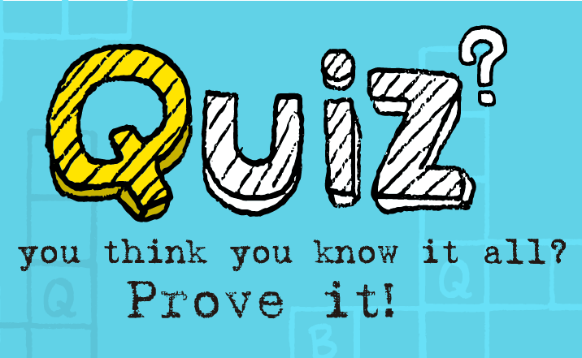
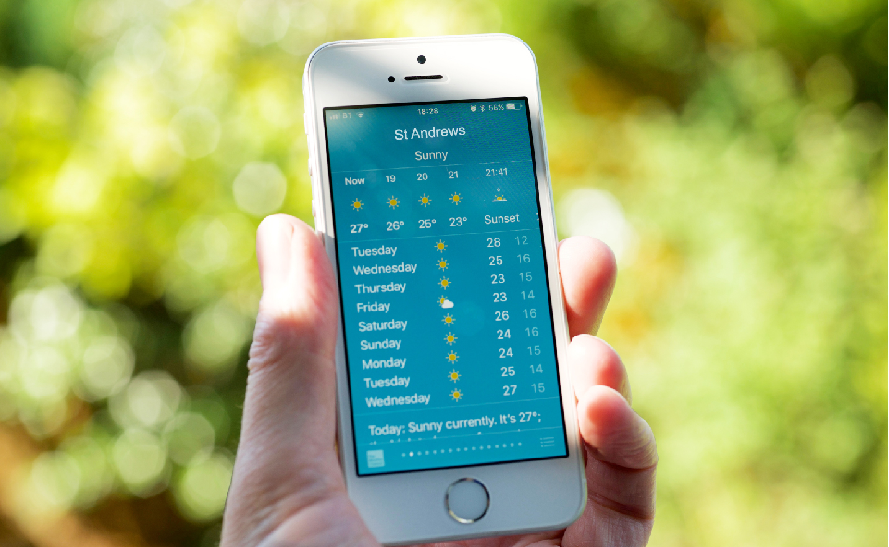
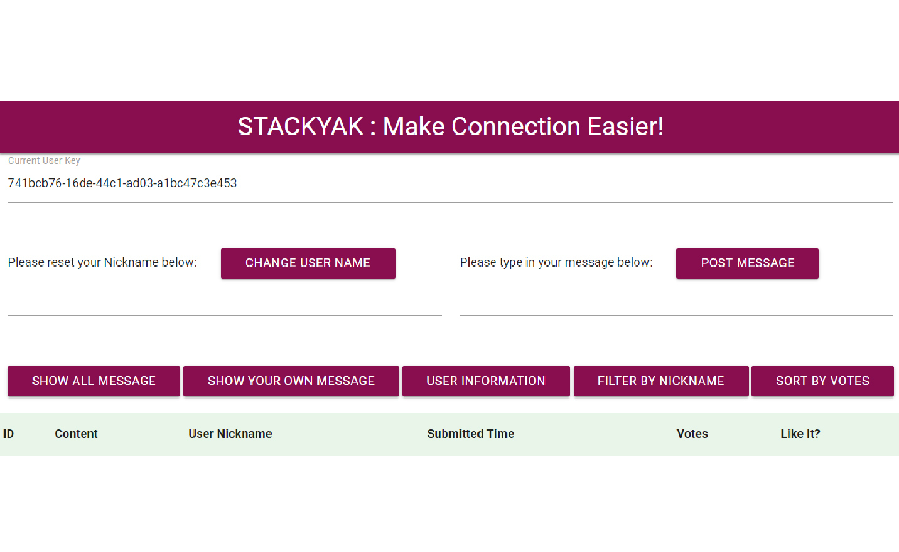
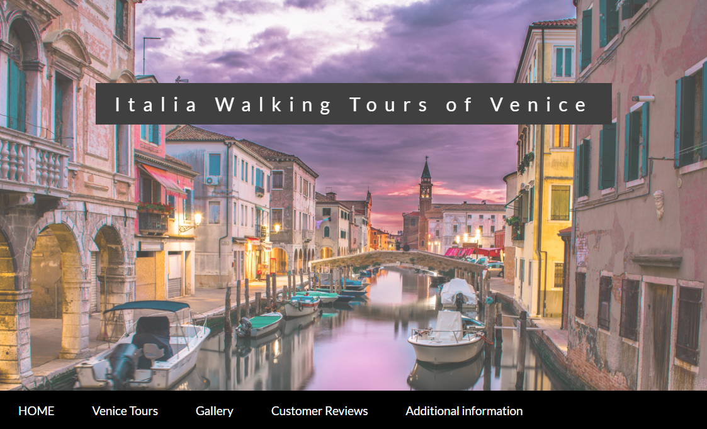
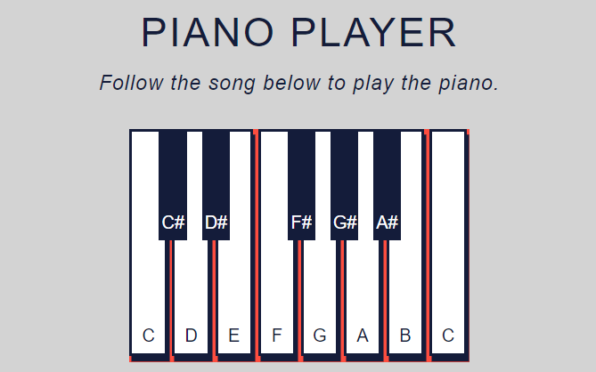
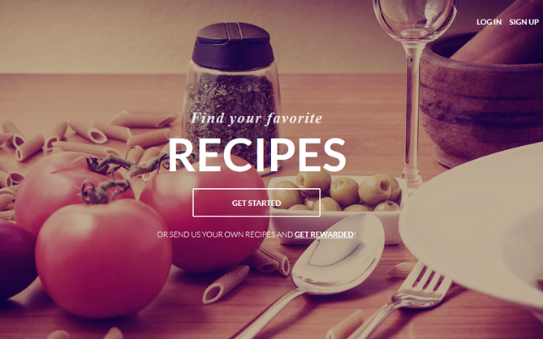

A web version pub quiz presenting a sequence of questions with multiple options and one correct answer. If the answer is correct, the player is awarded a sum of money. After each question, the player can choose to stop and take the earnings, or continue with the next question. If the player answers three questions wrong, they lose the game and lose the money.

Fife area community page for up-to-date news.
An open-ended single-page JavaScript application allows the user to post and exchange the latest information. The application uses Node.js with RESTful API, database backend and external APIs while the user interface is built using Vue.js framework.

StacsYak is a online new messaging service.
It lets the users post messages, called Yaks, to a service and read the Yaks other people post.
The StacsYak system is based around a server-side Web API that can be used to post Yaks, read all the current Yaks, and delete Yaks. It can also be used to up vote and down vote Yaks, and get information about the users of the system, though these are provided for the basis of extension activities.

This is a responsive website promoting various tours of the Italian city Venice for a travel agency,
including introduction to different tours, additional information and company information.
The target audience will be users who want to take a trip to Venice and experience the city.


https://jiunyuchen.github.io/Recipes/